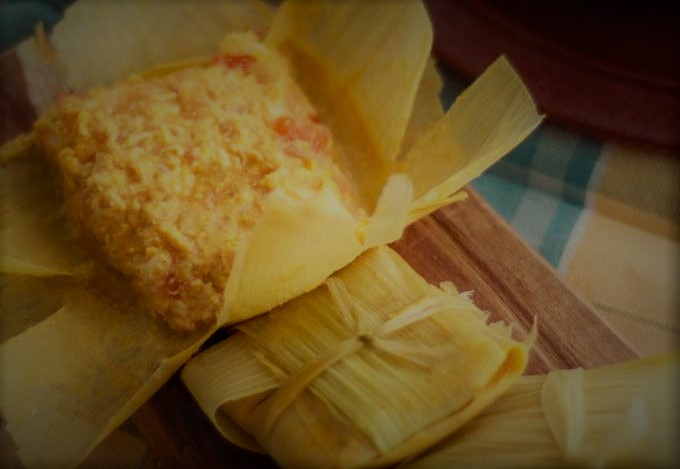
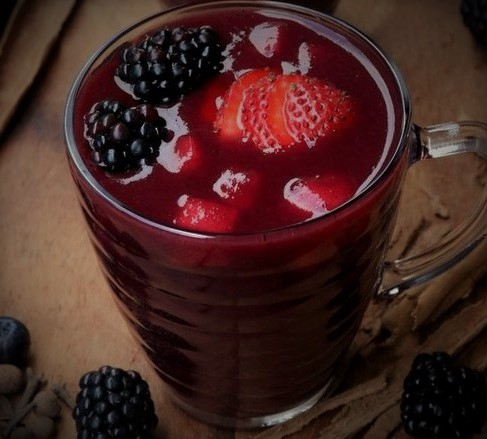

Recetas de la sierra ecuatoriana
FANESCA

Porciones: 10 Tiempo: 75min
ingredientes
- 1 1/2 Taza de Bacalao lavado y remojado en leche desde la noche
- 2 Cucharadas de Mantequilla Con Sal
- 1/4 Taza de Aceite Con Achiote
- 1 Taza de Cebolla Larga picada finamente
- 1 Unidad de Ajo picado finamente
- 1 Cucharadita de Comino Molido o al gusto
- 1 Taza de Habas tiernas, peladas
- 1 Taza de Arvejas tiernas, de preferencia peladas
- 1 Taza de Fréjol Rojo tierno, de preferencia pelado
- 2 Tazas de Choclo tierno, pelado
- 1/2 Taza de Col picado finamente
- 1/2 Taza de Arroz cocido
- 2 Tazas de Zapallo cocido y licuado
- 1 Taza de Sambo cocido y licuado
- 1 1/2 Taza de Chochos pelados
- 2 Cubos de Caldo De Gallina
- 2 Litros Leche Semidescremada
- 1 1/2 Taza de Crema De Leche
- 1 Taza de Queso Fresco en trozos o rallado a elección
- 1 Cucharadita de Sal o a gusto
- 1 Rama de Perejil Fresco para decorar
- 1 Unidad de Plátano Maduro cortado en rodajas y fritos para decorar y acompañar
- 3 Unidades de Huevos duros, cortados en laminas redondas
- 2 Unidades de Ají Fresco picados en laminas, para decorar
Proceso
- Lava el bacalao, quítale el exceso de sal bajo el chorro de agua, una vez limpio déjalo reposar toda la noche en suficiente leche como para que cubra el pescado. El día de la preparación retira el pescado y reserva la leche.
- Cocina todos los granos por separado hasta que estén suaves. Resérvalos.
- En una olla grande coloca mantequilla, aceite de achiote, cebolla, ajo y comino, realiza un refrito hasta que la cebolla este translucida. Coloca el arroz, col, licuados de sambo y zapallo y mezcla hasta que el arroz se pierda en la preparación, incorpora los granos previamente cocinados y la leche del bacalao. Incorpora los Caldos de Gallina y disuélvelos.
- Deja hervir hasta que vaya teniendo textura, agrega lo restante de leche semidescremada, crema de leche, el queso fresco rallado y deja hervir hasta que tome textura espesa.
- Acompaña la fanesca con maduro frito, masitas, empanadas, huevo duro, aji y hojas de perejil. También puedes acompañar con el tradicional molo y pristiños o higos con queso como postre.
FRITADA DE CHANCHO
Porciones: 6 Tiempo: 35min
Receta de Carmen, Isla Trinitaria - Guayaquil
Ingredientes
- 4 Tazas de Carne De Cerdo cortada en cubos
- Mote o choclo
- Sal y pimienta a gusto/li>
- 1 diente de ajo
- 1 rama de cebolla larga
- Sazon a gusto
- Ranchero a gusto
- Maduro
- 1 cebolla
- 1 tomate
Proceso
- Lavar bien la carne con limon en un bol y sazonar con sazon y sal, reservar.
- Cocinar en una olla la carne con la cebolla larga, el ajo ranchero y pimienta, un poco de agua, aceite y sal hasta que esté todo bien dorado durante unos 25 minutos.
- Cocinar el mote o el choclo y fritar los maduros
- Servir el refrito de la carne con aguacates, el choclo o mote, los maduros fritos y una salsa curtida del tomate y la cebolla.
LLAPINGACHOS
Porciones: 4 Tiempo: 1h
Receta de Sra Norma, Isla Trinitaria - Guayaquil
Ingredientes
- Pasta de mani
- 1 cebolla en corte juliana
- 1 tomate
- Lechuga picada
- Aguacate
- Chorizo o salchicha una por persona
- Huevo uno por persona
- Papas
Proceso
- Hacer un pure de papas, bien majado, agregarle un poco de achiote para darle color, sal a gusto y mantequilla para darle suavidad.
- Hacer con ese pure tortillas de papa dandole forma con la mano y poniendole queso fresco
- Dorar un poco en la sarten las tortillas
- Hacer un refrito de cebolla colorada y cebolla blanca cortada bien finita, 1 diente de ajo bien picado, comino y achiote.
- Licuar la pasta de mani con un poquito de leche y de agua y luego agregar al refrito hasta que este espeso a gusto
- Agregarle al final un poco de cilatro a la pasta de mani
- Picar la lechuga bien fina, cortar en forma de juliana la cebolla colorada, y en cuadrados el tomate. Luego curtirlas con limon y sal y al final ponerle un poquito de aceite.
- Fritar un choriso o cocinar las salchichas
- Hacer un huevo frito
- Cortar el aguacate en tajos
- Servir todo en un plato si desea puede servirse con arroz.
HUMITAS

Porciones: 8 Tiempo: 1h
Ingredientes
- 7 mazorcas, choclos o maíz fresco con las hojas o envolturas
- 3 tazas de queso rallado (preferiblemente mozzarella)
- 1/4 taza de crema de leche
- 30 ml de mantequilla derretida
- 1/4 taza de harina de maíz
- 4 huevos (Yemas y claras separadas)
- 1 cda de polvo de hornear
- 2 cdas cucharadas de azúcar
- 1/2 cda de sal
Proceso
- Pelamos las mazorcas, procurando no romper las hojas y dejarlas completas, ya que la usaremos más adelante. Recuerda, quitarle las pelusitas al maíz.
- Ahora, con la ayuda de un cuchillo vas a desgranar las mazorcas hasta obtener todos los granos del choclo. Reserva.
- Coloca una olla con agua, cuando esté hirviendo colocarás las hojas de maíz enteras y dejarás hervir por 3 minutos hasta que suavicen. Sácalas, escúrrelas y reserva.
- En una licuadora o procesadora, vas a añadir los granos de maíz o choclo, la harina de maíz, las yema de los huevos, dos tazas de queso rallado, el polvo de hornear, la crema de leche, el azúcar y la sal. Licúe muy bien hasta obtener un puré. Vierte la mezcla en un bol.
- En un recipiente pequeño, vas a batir las claras a punto de nieve. Posteriormente la añadirás poco a poco a la mezcla anterior y con movimientos envolventes, integrarás. Reserva.
- Toma una hoja de la mazorca ya hervida, y las vas a cortar en tiras largas y delgadas que nos servirán de mamare.
- Para darle forma a las humitas, vas a tomar dos hojas grandes y las vas a colora una encima de la otra.
- Ahora, añade 3 cucharadas de la mezcla de maíz, esparcieras un poco y le agregarás queso en el medio.
- Procede a hacer un paquete doblando los lados de las hojas para encerrar el relleno y luego doblando las puntas hacia adentro. Toma algunas tiras de las hojas, y amarra las humitas hasta que queden presionadas y sin que el relleno se salga.
- Una vez las tengas todas, las colocarás en una vaporera y dejarás cocinar de 35 a 40 minutos hasta que estén bien cocidas.
- Sirve caliente con un poco de mantequilla o nata.
COLADA MORADA

Porciones: 5 litros Tiempo: 1h
Ingredientes
- 6 litros de agua
- 100 gr de pulpa de naranjillo o lulo
- 2 tazas de mora
- 2 tazas de frambuesa
- 1 taza de harina de maíz morada o negra
- 6 ramas de canela
- 3 hojas de laurel
- 1 atado de hierbas (hojas de naranja, hojas de arrayán y hojas de hierba luisa)vos de olor
- 5 clavos de olor
- 2 tazas de piña picada en cuadritos
- 2 tazas de fresas en rodajadas
- 100 gr de papelón rallado o azúcar
Proceso
- Vamos a iniciar nuestra receta, colocando 5 litros de agua a fuego alto. Cuando hierva, le añadirás el atado de hierbas, la canela, las hojas de laurel y los clavitos de olor. Deja cocinar por 15 minutos hasta que todos los sabores y olores se desprendan.
- Deja enfriar tu mezcla para luego colarla y extraer las ramas de canela. las hojas de laurel, los clavitos de olor y el atado de hierbas. Reserva.
- Toma el harina de maíz y la vas a cernir. Luego, la vas a disolver en el litro de agua restante. Reserva.
- En una licuadora, vas a procesar la pulpa de naranjillo o lulo, las frambuesas y las moras. Cuela y reserva.
- La primera mezclas de especias y hierbas, la vas a colocar en una olla a fuego alto, para posteriormente añadirle el harina disuelta más el jugo de frambuesas, fresa y naranjillo. Mezcla hasta que todo se incorpore.
- Ahora, es momento de añadir el papelón rallado o el azúcar. Mezcla y deja cocinar por 30 minutos. Durante este tiempo, no dejes de mover tu mezcla para que no se pegue.
- A la mitad de la cocción, le vas a incorporar los trozos de piña y fresa para que le den textura.
- Terminar de cocinar, deja enfriar y licúa con hielo en licuadora.
- Decora con más frutas. ¡Disfruta!